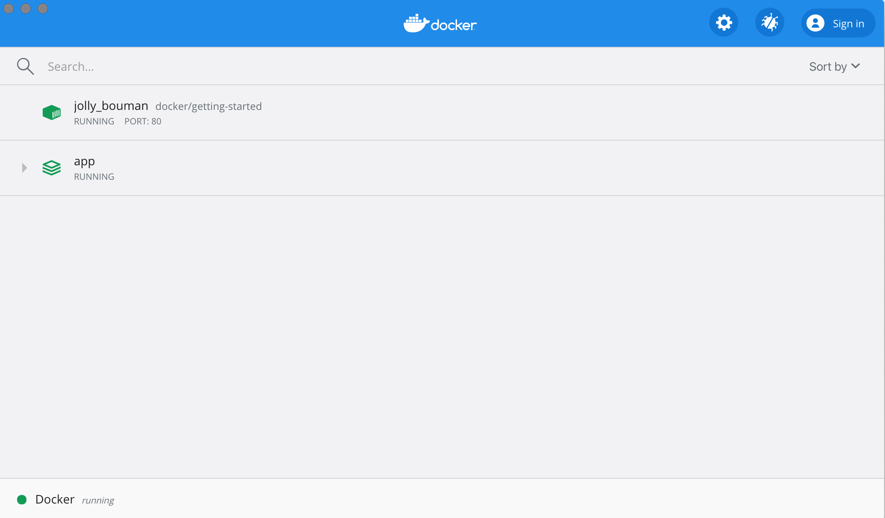
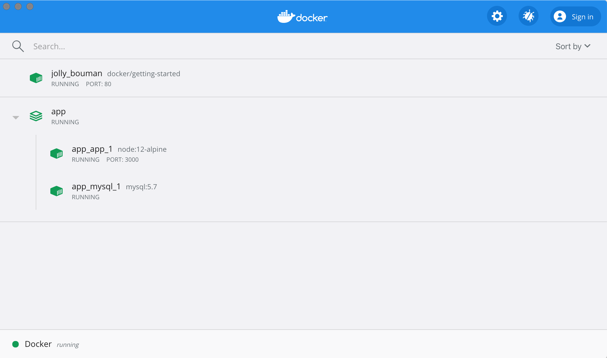

Docker Compose is a tool that was developed to help define and share multi-container applications. With Compose, we can create a YAML file to define the services and with a single command, can spin everything up or tear it all down.
The big advantage of using Compose is you can define your application stack in a file, keep it at the root of your project repo (it's now version controlled), and easily enable someone else to contribute to your project. Someone would only need to clone your repo and start the compose app. In fact, you might see quite a few projects on GitHub/GitLab doing exactly this now.
So, how do we get started?
Installing Docker Compose
If you installed Docker Desktop/Toolbox for either Windows or Mac, you already have Docker Compose! Play-with-Docker instances already have Docker Compose installed as well. If you are on a Linux machine, you will need to install Docker Compose using the instructions here.
After installation, you should be able to run the following and see version information.
docker-compose version
Creating our Compose File
-
At the root of the app project, create a file named
docker-compose.yml. -
In the compose file, we'll start off by defining the schema version. In most cases, it's best to use the latest supported version. You can look at the Compose file reference for the current schema versions and the compatibility matrix.
yaml version: "3.8" -
Next, we'll define the list of services (or containers) we want to run as part of our application.
```yaml hl_lines="3" version: "3.8"
services: ```
And now, we'll start migrating a service at a time into the compose file.
Defining the App Service
To remember, this was the command we were using to define our app container.
docker run -dp 3000:3000 \
-w /app -v "$(pwd):/app" \
--network todo-app \
-e MYSQL_HOST=mysql \
-e MYSQL_USER=root \
-e MYSQL_PASSWORD=secret \
-e MYSQL_DB=todos \
node:12-alpine \
sh -c "yarn install && yarn run dev"
If you are using PowerShell then use this command.
docker run -dp 3000:3000 `
-w /app -v "$(pwd):/app" `
--network todo-app `
-e MYSQL_HOST=mysql `
-e MYSQL_USER=root `
-e MYSQL_PASSWORD=secret `
-e MYSQL_DB=todos `
node:12-alpine `
sh -c "yarn install && yarn run dev"
-
First, let's define the service entry and the image for the container. We can pick any name for the service. The name will automatically become a network alias, which will be useful when defining our MySQL service.
```yaml hl_lines="4 5" version: "3.8"
services: app: image: node:12-alpine ```
-
Typically, you will see the command close to the
imagedefinition, although there is no requirement on ordering. So, let's go ahead and move that into our file.```yaml hl_lines="6" version: "3.8"
services: app: image: node:12-alpine command: sh -c "yarn install && yarn run dev" ```
-
Let's migrate the
-p 3000:3000part of the command by defining theportsfor the service. We will use the short syntax here, but there is also a more verbose long syntax available as well.```yaml hl_lines="7 8" version: "3.8"
services: app: image: node:12-alpine command: sh -c "yarn install && yarn run dev" ports: - 3000:3000 ```
-
Next, we'll migrate both the working directory (
-w /app) and the volume mapping (-v "$(pwd):/app") by using theworking_dirandvolumesdefinitions. Volumes also has a short and long syntax.One advantage of Docker Compose volume definitions is we can use relative paths from the current directory.
```yaml hl_lines="9 10 11" version: "3.8"
services: app: image: node:12-alpine command: sh -c "yarn install && yarn run dev" ports: - 3000:3000 working_dir: /app volumes: - ./:/app ```
-
Finally, we need to migrate the environment variable definitions using the
environmentkey.```yaml hl_lines="12 13 14 15 16" version: "3.8"
services: app: image: node:12-alpine command: sh -c "yarn install && yarn run dev" ports: - 3000:3000 working_dir: /app volumes: - ./:/app environment: MYSQL_HOST: mysql MYSQL_USER: root MYSQL_PASSWORD: secret MYSQL_DB: todos ```
Defining the MySQL Service
Now, it's time to define the MySQL service. The command that we used for that container was the following:
docker run -d \
--network todo-app --network-alias mysql \
-v todo-mysql-data:/var/lib/mysql \
-e MYSQL_ROOT_PASSWORD=secret \
-e MYSQL_DATABASE=todos \
mysql:5.7
If you are using PowerShell then use this command.
docker run -d `
--network todo-app --network-alias mysql `
-v todo-mysql-data:/var/lib/mysql `
-e MYSQL_ROOT_PASSWORD=secret `
-e MYSQL_DATABASE=todos `
mysql:5.7
-
We will first define the new service and name it
mysqlso it automatically gets the network alias. We'll go ahead and specify the image to use as well.```yaml hl_lines="6 7" version: "3.8"
services: app: # The app service definition mysql: image: mysql:5.7 ```
-
Next, we'll define the volume mapping. When we ran the container with
docker run, the named volume was created automatically. However, that doesn't happen when running with Compose. We need to define the volume in the top-levelvolumes:section and then specify the mountpoint in the service config. By simply providing only the volume name, the default options are used. There are many more options available though.```yaml hl_lines="8 9 10 11 12" version: "3.8"
services: app: # The app service definition mysql: image: mysql:5.7 volumes: - todo-mysql-data:/var/lib/mysql
volumes: todo-mysql-data: ```
-
Finally, we only need to specify the environment variables.
```yaml hl_lines="10 11 12" version: "3.8"
services: app: # The app service definition mysql: image: mysql:5.7 volumes: - todo-mysql-data:/var/lib/mysql environment: MYSQL_ROOT_PASSWORD: secret MYSQL_DATABASE: todos
volumes: todo-mysql-data: ```
At this point, our complete docker-compose.yml should look like this:
version: "3.8"
services:
app:
image: node:12-alpine
command: sh -c "yarn install && yarn run dev"
ports:
- 3000:3000
working_dir: /app
volumes:
- ./:/app
environment:
MYSQL_HOST: mysql
MYSQL_USER: root
MYSQL_PASSWORD: secret
MYSQL_DB: todos
mysql:
image: mysql:5.7
volumes:
- todo-mysql-data:/var/lib/mysql
environment:
MYSQL_ROOT_PASSWORD: secret
MYSQL_DATABASE: todos
volumes:
todo-mysql-data:
Running our Application Stack
Now that we have our docker-compose.yml file, we can start it up!
-
Make sure no other copies of the app/db are running first (
docker psanddocker rm -f <ids>). -
Start up the application stack using the
docker-compose upcommand. We'll add the-dflag to run everything in the background.bash docker-compose up -dWhen we run this, we should see output like this:
plaintext Creating network "app_default" with the default driver Creating volume "app_todo-mysql-data" with default driver Creating app_app_1 ... done Creating app_mysql_1 ... doneYou'll notice that the volume was created as well as a network! By default, Docker Compose automatically creates a network specifically for the application stack (which is why we didn't define one in the compose file).
-
Let's look at the logs using the
docker-compose logs -fcommand. You'll see the logs from each of the services interleaved into a single stream. This is incredibly useful when you want to watch for timing-related issues. The-fflag "follows" the log, so will give you live output as it's generated.If you don't already, you'll see output that looks like this...
plaintext mysql_1 | 2019-10-03T03:07:16.083639Z 0 [Note] mysqld: ready for connections. mysql_1 | Version: '5.7.27' socket: '/var/run/mysqld/mysqld.sock' port: 3306 MySQL Community Server (GPL) app_1 | Connected to mysql db at host mysql app_1 | Listening on port 3000The service name is displayed at the beginning of the line (often colored) to help distinguish messages. If you want to view the logs for a specific service, you can add the service name to the end of the logs command (for example,
docker-compose logs -f app).!!! info "Pro tip - Waiting for the DB before starting the app" When the app is starting up, it actually sits and waits for MySQL to be up and ready before trying to connect to it. Docker doesn't have any built-in support to wait for another container to be fully up, running, and ready before starting another container. For Node-based projects, you can use the wait-port dependency. Similar projects exist for other languages/frameworks.
-
At this point, you should be able to open your app and see it running. And hey! We're down to a single command!
Seeing our App Stack in Docker Dashboard
If we look at the Docker Dashboard, we'll see that there is a group named app. This is the "project name" from Docker
Compose and used to group the containers together. By default, the project name is simply the name of the directory that the
docker-compose.yml was located in.

If you twirl down the app, you will see the two containers we defined in the compose file. The names are also a little
more descriptive, as they follow the pattern of <project-name>_<service-name>_<replica-number>. So, it's very easy to
quickly see what container is our app and which container is the mysql database.

Tearing it All Down
When you're ready to tear it all down, simply run docker-compose down or hit the trash can on the Docker Dashboard
for the entire app. The containers will stop and the network will be removed.
!!! warning "Removing Volumes"
By default, named volumes in your compose file are NOT removed when running docker-compose down. If you want to
remove the volumes, you will need to add the --volumes flag.
The Docker Dashboard does _not_ remove volumes when you delete the app stack.
Once torn down, you can switch to another project, run docker-compose up and be ready to contribute to that project! It really
doesn't get much simpler than that!
Recap
In this section, we learned about Docker Compose and how it helps us dramatically simplify the defining and sharing of multi-service applications. We created a Compose file by translating the commands we were using into the appropriate compose format.
At this point, we're starting to wrap up the tutorial. However, there are a few best practices about image building we want to cover, as there is a big issue with the Dockerfile we've been using. So, let's take a look!